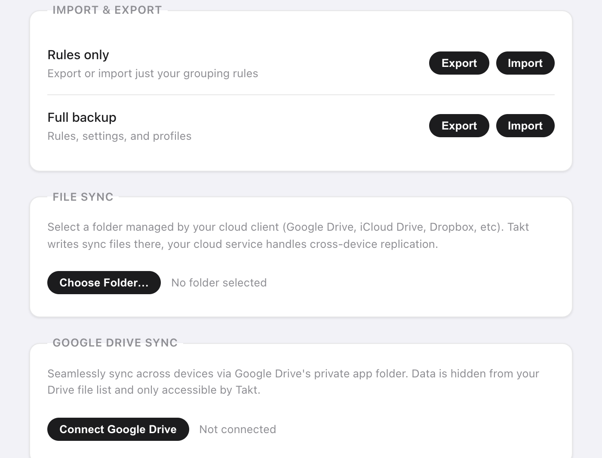

In breve: apri la pagina delle opzioni di Takt, vai su Settings e scegli una di queste:
- Export in un file JSON: solo le regole, oppure un backup completo.
- Sincronizzazione file (File Sync): Takt scrive in una cartella che Google Drive, Dropbox o iCloud Drive sincronizzano al posto tuo.
- Sincronizzazione Drive (Drive Sync): Takt si sincronizza con una cartella nascosta dell'app nel tuo Google Drive, ogni 15 minuti.
Tutte e tre sono Premium. Nessuna invia i tuoi dati a un server di Takt.
Perché i miei gruppi di schede di Chrome non si sincronizzano?
La sincronizzazione dei gruppi di schede integrata in Chrome confonde molte persone. Due cose le mettono in difficoltà:
- Richiede che Gruppi di schede salvati ("Saved tab groups") sia attivo nelle impostazioni di sincronizzazione di ogni dispositivo.
- Un gruppo sincronizzato finisce nella barra dei preferiti. Non si apre da solo.
Se vuoi solo qualche gruppo su un secondo computer, controlla prima quell'impostazione. È gratuita e integrata.
Takt risolve un problema diverso. Non sincronizza in tempo reale le schede aperte. Sincronizza la configurazione che sta dietro: regole, profili, sessioni salvate e schede ibernate. Le regole ricreano gli stessi gruppi su ogni computer mentre navighi. Una sessione salvata riapre un intero spazio di lavoro quando lo chiedi.
Come faccio il backup di schede e regole in un file?
In Settings → Import & Export trovi due righe:
| Opzione | File | Contenuto |
|---|---|---|
| Rules only | takt-rules.json | Le regole di raggruppamento |
| Full backup | takt-backup.json | Regole, impostazioni, profili, sessioni salvate e schede ibernate |
Usa Rules only per condividere un set di regole con un collega. Usa Full backup prima di reinstallare Chrome o di passare a un nuovo computer.
In importazione, i file sono limitati a 5 MB. Regole e sessioni vengono aggiunte a quelle che hai già, e quelle con un nome che usi già vengono saltate. Un backup completo sostituisce anche le impostazioni e i profili con quelli del file.

Come sincronizzo tramite Dropbox, iCloud o una cartella di Google Drive?
Usa File Sync. Takt scrive semplici file JSON in una cartella che scegli tu. Il tuo client cloud li carica come qualsiasi altro file.
- Fai clic su Choose Folder… e scegli una cartella dentro la cartella di Drive, Dropbox o iCloud Drive, per esempio
Dropbox/Takt/. - Fai clic su Sync Now. Takt scrive
rules.json,profiles.json,sessions.json,hibernated.jsonemeta.json. - Spunta Auto-sync on every change per riscrivere i file circa 2 secondi dopo l'ultima modifica.
- Sull'altro computer, fai clic su Import from Folder e scegli la stessa cartella sincronizzata.
Nessun accesso da fare, e puoi aprire i file e leggerli. Funziona con qualsiasi servizio cloud che abbia una cartella sul computer.
Il compromesso: è a senso unico per ogni computer. Ogni computer scrive la sua copia, e importi i dati di un altro computer con Import from Folder. Se Chrome perde l'accesso alla cartella, Takt mostra un pulsante Re-authorize.
Come funziona la sincronizzazione con Google Drive?
Fai clic su Connect Google Drive e accedi una volta. Takt salva i suoi file nella cartella nascosta delle app di Drive. È separata dai tuoi file di Drive e non compare nell'interfaccia di Drive.
Takt chiede a Google solo due autorizzazioni:
- Dati delle app di Drive: leggere e scrivere una cartella che solo Takt può vedere. Non può elencare né aprire gli altri tuoi file.
- Indirizzo email: per mostrare quale account è collegato.
Spunta Auto-sync every 15 minutes e Takt si sincronizza in background. Per un nuovo computer, collega lo stesso account e fai clic su Force Pull per sostituire le sue regole, i suoi profili e le sue sessioni con la copia su Drive. Force Push fa il contrario e sovrascrive Drive. Entrambi hanno effetto immediato e non si possono annullare da dentro Takt.
Quale metodo usare?
| Sincronizzazione dei gruppi di Chrome | Esportazione JSON | Sincronizzazione file | Sincronizzazione Drive | |
|---|---|---|---|---|
| Cosa si sposta | Gruppi di schede salvati | Regole, o un backup completo | Regole, profili, sessioni, schede ibernate | Regole, profili, sessioni, schede ibernate, impostazioni di ibernazione |
| Automatica | Sì | No | Scrittura sì, importazione a mano | Ogni 15 minuti |
| Cloud | Il tuo account Google | Nessuno | Qualsiasi cartella sincronizzata sul computer | Solo Google Drive |
| Costo | Gratis | Premium | Premium | Premium |
Un dettaglio in più: Takt tiene regole, impostazioni e profili nello spazio di sincronizzazione di Chrome, che segue il tuo account Chrome quando la sincronizzazione di Chrome è attiva. Sessioni e schede ibernate restano in locale, quindi per quelle serve uno dei metodi qui sopra.
Cosa backup e sincronizzazione non fanno
- Nessun mirroring delle schede in tempo reale. Le schede aperte su un computer non compaiono su un altro. Salva una sessione e ripristinala lì.
- Vince l'ultima scrittura. Le modifiche fatte su due computer contemporaneamente non vengono unite. Scegli un computer su cui fare le modifiche, oppure invia e scarica di proposito.
- La Sincronizzazione Drive funziona solo con Google. Per Dropbox, iCloud o altro usa la Sincronizzazione file.
Configura una volta. Portalo su ogni computer.
Aggiungi Takt a Chrome, è gratisDomande frequenti
Perché i miei gruppi di schede di Chrome non si sincronizzano?
Chrome richiede che Gruppi di schede salvati sia attivo nelle impostazioni di sincronizzazione di ogni dispositivo, e i gruppi sincronizzati compaiono nella barra dei preferiti invece di aprirsi da soli.
Takt sincronizza in tempo reale le schede aperte tra computer?
No. Sincronizza le regole, i profili, le sessioni salvate e le schede ibernate. Le regole ricreano gli stessi gruppi su ogni computer, e una sessione salvata riapre un intero spazio di lavoro.
Takt può leggere i miei file di Google Drive?
No. La Sincronizzazione Drive usa solo l'ambito dei dati delle app, una cartella nascosta che solo Takt può vedere, più la tua email per mostrare l'account collegato. Vedi come Takt tiene i dati in locale.
Backup e sincronizzazione sono gratuiti?
No. Esportazione e importazione JSON, Sincronizzazione file e Sincronizzazione Drive sono Premium, $3/mese o $30/anno.